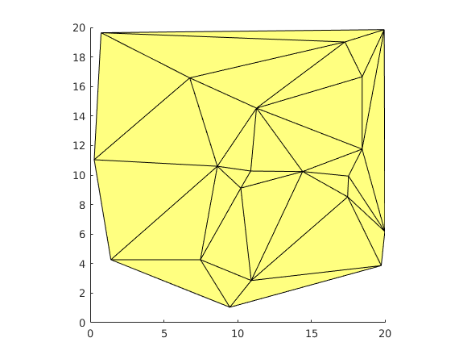
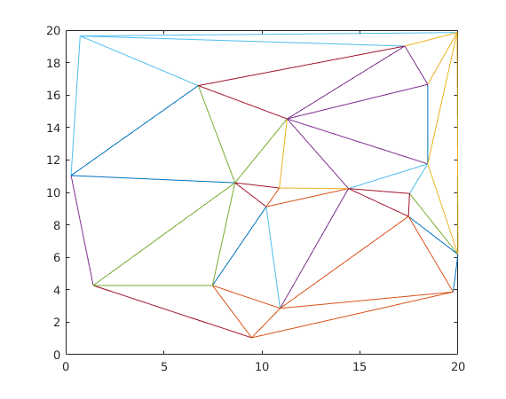

poly2mesh
| main | Tutorials | Functions | website |
Converts a shapefile like structure of polygons to a mesh. As the purpose of this function is to convert a shapefile into a mesh that will be used eventually for finite element computations, it make sense that the polygon shapes be of the same type e.g triangles or quadrilaterals and of course they should not contain islands or be multipart polygons. The code may still work but the results will be at least interesting.
Version : 1.0
Author : George Kourakos
email: gkourakos@ucdavis.edu
web : https://gwt.ucdavis.edu/research-tools-and-applications/msim
Date : 09-Sep-2019
Department of Land Air and Water
University of California Davis
Contents
Usage
[p, msh, prop] = poly2mesh( S, type, thres )
Input:
S : is a structure variable with at least the following fields:
Geometry : This should always be 'Polygon'.
X : The X coordinates of the polygon followed by nan at the end i.e. [X1, X2, X3, X1, nan]
Y : The Y coordinates of the polygon followed by nan at the end i.e. [Y1, Y2, Y3, Y1, nan]
type : is either triangle or quad
thres: is the search threshold. If the distance between two points is smaller than threshold then the two points are considered identical.
Output
p : [Np x 2] matrix that holds the coordinates of the element nodes.
msh : [Nel x 3 or 4] contains the connectivity ids.
prop :contains property values for each mesh element if any.
Example
We will create first a dummy shapefile. For details see the mesh2poly page
pnts = 20*rand(20,2);
tr = delaunay(pnts(:,1), pnts(:,2));
nameprop = {'ID', 'Prop1', 'Prop2', 'Prop3', 'Prop4'};
S = mesh2poly( pnts, tr, [[1:size(tr,1)]' rand(size(tr,1),4)], nameprop);
mapshow(S);
 Next we will convert the shapefile we just created to a mesh:
[p, msh, prop] = poly2mesh( S, 'triangle', 0.1 );
The mesh of this example consists of triangles therefore we can easily visualize it
trimesh(msh, p(:,1), p(:,2));
The prop variable contains the properties of the shapefile except the Geometry, X and Y fields.
prop
This structure can then be used by shapewrite to write the structure into a shapefile.
prop =
31×1 struct array with fields:
ID
Prop1
Prop2
Prop3
Prop4